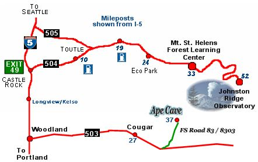
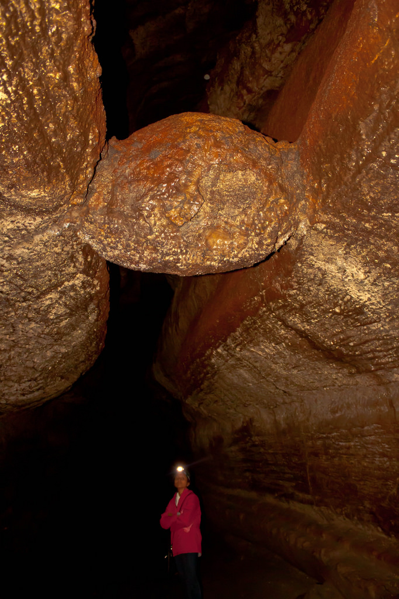

Ape Caves

- View Rating:
- Pet Friendlyness
- Length: 2.8mi
- Elevation: 2450 ft.
- Restrooms: Yes
- Parking: Street
- Supplies: Needed
From I-5 exit 21, travel north and east on State Route 503 (Lewis River Road). At 23 miles from the freeway, continue straight on Spur 503. At 31 miles, Spur 503 becomes Forest Road 90. Cross a bridge over a canal, then 2.6 miles later, turn left on FR 83. Travel 1.7 miles then turn left on FR 8303. Travel the final mile to the parking lot and Ape Headquarters Center. The parking lot has room for 50-60 vehicles, including bus and RV spots. There are vault toilets and garbage cans, but no drinking water. When it’s open, Ape Headquarters Center offers rental lanterns.
Recommendations:
Gentoo text placeholder
Chinstrap
Gentoo text placeholder